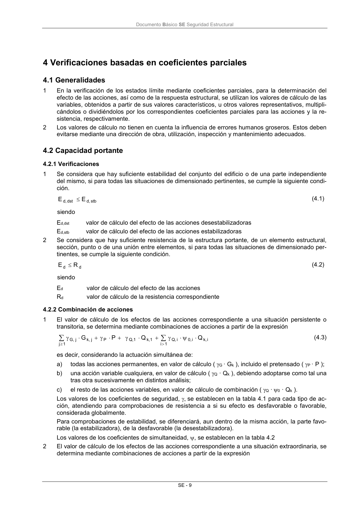

DB-SE Seguridad estructural · edición 2019-12-20 · capa oficial
Documento DB-SE-oficial · SHA-256 del PDF ec1fbfc51b28c4d62667aec480585b76fe31727ccf1615015a5d2d2677763f8f
Copia fiel del PDF fuente · Fuente oficial
Ficha de la disposición en la fuente oficial
Formatos: JSON del segmento · Markdown
4.2.2 Combinación de acciones 1 El valor de cálculo de los efectos de las acciones correspondiente a una situación persistente o transitoria, se determina mediante combinaciones de acciones a partir de la expresión 1 j 1 i i k, i 0, i Q, k,1 Q,1 P j k, j G, Q Q P G (4.3) es decir, considerando la actuación simultánea de: a) todas las acciones permanentes, en valor de cálculo ( G · Gk ), incluido el pretensado ( P · P ); b) una acción variable cualquiera, en valor de cálculo ( Q · Qk ), debiendo adoptarse como tal una tras otra sucesivamente en distintos análisis; c) el resto de las acciones variables, en valor de cálculo de combinación ( Q ·0 · Qk ). Los valores de los coeficientes de seguridad, se establecen en la tabla 4.1 para cada tipo de ac- ción, atendiendo para comprobaciones de resistencia a si su efecto es desfavorable o favorable, considerada globalmente. Para comprobaciones de estabilidad, se diferenciará, aun dentro de la misma acción, la parte favo- rable (la estabilizadora), de la desfavorable (la desestabilizadora). Los valores de los coeficientes de simultaneidad, , se establecen en la tabla 4.2 2 El valor de cálculo de los efectos de las acciones correspondiente a una situación extraordinaria, se determina mediante combinaciones de acciones a partir de la expresión Documento Básico SE Seguridad Estructural SE - 10 1 j 1 i i k, i 2, i Q, k,1 1,1 Q,1 d p j k, j G, Q · Q · A ·P ·G (4.4) es decir, considerando la actuación simultánea de: a) todas las acciones permanentes, en valor de cálculo ( G · Gk ), incluido el pretensado ( P · P ); b) una acción accidental cualquiera, en valor de cálculo ( Ad ), debiendo analizarse sucesivamen- te con cada una de ellas. c) una acción variable, en valor de cálculo frecuente ( Q ·1 · Qk ), debiendo adoptarse como tal, una tras otra sucesivamente en distintos análisis con cada acción accidental considerada. d) El resto de las acciones variables, en valor de cálculo casi permanente (Q ·2 · Qk ). En situación extraordinaria, todos los coeficientes de seguridad (G,P, Qson iguales a cero si su efecto es favorable, o a la unidad si es desfavorable, en los términos anteriores. 3 En los casos en los que la acción accidental sea la acción sísmica, todas las acciones variables concomitantes se tendrán en cuenta con su valor casi permanente, según la expresión 1 j 1 i i k, i 2, d j k, Q A P G (4.5)
